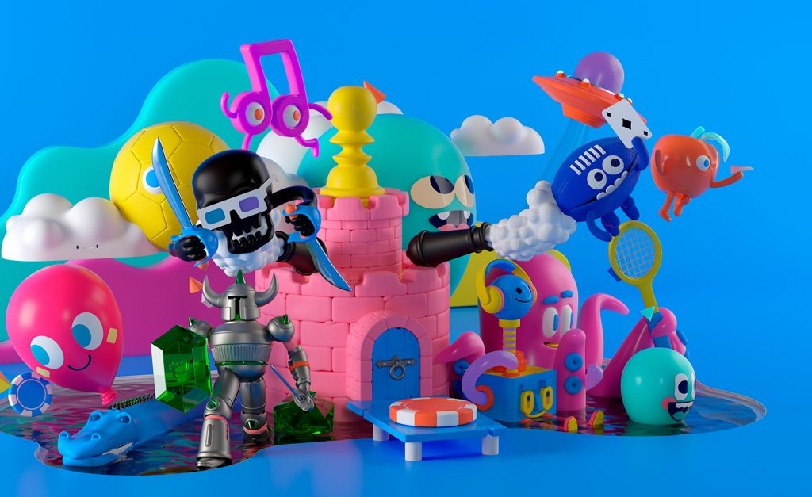
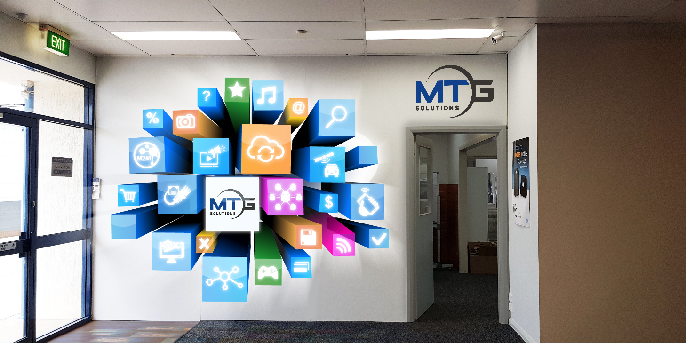

Angela Elizabeth Romero Sanabria
Branding Personal
El Personal branding es la gestión de tu marca personal, actuando y posicionándote de forma
que tu público entienda claramente quién eres y qué ofreces.
Para eso, debes saber por lo que quieres ser recordado y trabajar bien esa imagen.
- ¿Qué es la marca personal?
- La marca personal es prácticamente lo mismo que tu reputación. Es la imagen de ti que proyectas
en la gente y el impacto que eso tiene dentro y fuera de tu entorno profesional.
- Beneficios de la marca personal
- Como marca personal podrás crear toda una historia alrededor de tu identidad y no limitarte a vender únicamente tu imagen o tus servicios.
La gente te empezará a conocer por lo que dominas y mejor sabes hacer,
lo que te permitirá tener la oportunidad de ser percibido como un todo
- 1.Generas cercanía y empatía.
- 2.Creas una identidad.
-
- 1 Al hablar abiertamente de ti, te conviertes en una figura más 'humana' y menos 'comercial'.
- 1 Con el personal branding la gente sabrá perfectamente lo que les puedes ofrecer y podrá confiar en ti para determinadas cosas.

Diseño Digital V
El diseño digital es considerado un subconjunto del diseño de productos, pues trata completamente
acerca de la creación de los mismos, solo que a través del uso de software.
El Diseño Digital y el Mundo Real.
El diseño digital se centra en los usuarios.
La obsesión con el usuario, comienza literalmente con el usuario, y se lleva a cabo en reversa.
Innova y Simplifica
En segundo lugar, los diseñadores digitales buscan y requieren de la innovación , la invención y siempre encontrar formas de simplificar.
Así como es necesario enfocarte en tus clientes o usuarios, necesitas estar consciente de tu entorno, buscar nuevas ideas en todas partes,
y no debes limitarte a la mentalidad de "no se inventó aquí".

Animacion y Modelado 3D
El diseño en 3D implica saber aprovechar la profundidad del espacio digital para crear composiciones creíbles y sorprendentes.
Permite jugar con la imaginación y dar forma a ideas que, de otra manera, serían inviables en la realidad.
En resumen, el 3D consigue lo imposible con solo unos clics.
- Modelado de caja: Es la técnica líder dentro del diseño 3D y se basa en el modelado a partir de una figura primitiva como un plano o un cubo,
a la que se le añade geometría en forma de vértices que hacen que el modelo gane en forma y detalles.
- Modelado escultórico: Se crea un modelo 3D a través de la geometría, que simula la presión y el estiramiento en el modelo. Con este tipo de
modelado 3D se lleva a cabo un proceso similar al de creación de una escultura física, con la diferencia de que se utilizan diferentes
herramientas digitales que hacen que el resultado sea lo más realista posible..
- Modelado de bordes: Basado en un método poligonal, se crean modelos 3D a partir de esquemas en los que se rellenan los espacios que se
crean entre las formas del modelo. Este método es muy útil a la hora de modelar rostros humanos, debido a su facilidad para crear
las diferentes partes de la cara como los ojos, las orejas o los labios.SSS
- Superficies NURB: Este tipo de modelado tridimensional se utiliza sobre todo a la hora de elaborar modelos exactos de coches, aviones y o similares.
Se utiliza para crear curvas y superficies de manera sencilla, ya que se basa en el control de los contornos del objeto que será modelado
a través de puntos de control y vectores de nodos.

Diseño de Señaletica
La señalética es esa especialidad del diseño gráfico que termina ejerciendo de guía, y para ello sintetiza formas de comunicación
que han sido creadas para facilitarnos y orientarnos constantemente.
UN DISEÑO GRÁFICO SINTÉTICO, PRECISO Y ATRACTIVO
En este campo, como en otros, el diseño gráfico deberá ir de la mano de otras disciplinas. Profesionales de la arquitectura o de la cartografía, por ejemplo,
sientan las bases para una buena señalización. ¿Por qué? Porque una señal necesita ser eficaz y para ello, lo primero en lo que han de pensar sus creadores es
en su capacidad de atracción. Quienes la vean deberán poder hacerlo con el tiempo suficiente como para cumplir con la orden que indica; y la única manera
de poder ‘obedecerla’ será si contiene una información clara y precisa.

Innovación, Diseño y Desarrollo de Productos
La innovación de productos no consiste simplemente en ser nuevo o en ser diferente. Se trata de crear nuevos productos que encanten
a los consumidores, de tomar un nuevo camino que los consumidores quieran seguir.Y es precisamente aquí donde entran en juego
nuestra experiencia y conocimientos especializados en la innovación de productos. Buscamos nuevos sabores, fórmulas, fragancias,
envases, ingredientes e ideas.
- INTELIGENCIA
Usted necesita datos que respalden sus ideas y estrategias de innovación. Identificamos las tendencias y concretamos
sus implicaciones para que usted pueda centrarse en lo que sabe hacer mejor – la innovación para su empresa.
- INSPIRACIÓN
Nuestra visión global puede ampliar sus horizontes creativos y proporcionarle una nueva perspectiva. Nuestra experiencia
pone la innovación en su contexto, permitiéndole ver el potencial de la misma para su caso específico.
- IMPACTO
Nos centramos en los resultados, en la exploración objetiva de las razones del éxito y el fracaso de los nuevos lanzamientos de
productos. Podemos mostrarle las mejores prácticas y ayudarle a evitar algunos errores para que siempre vaya un paso por delante de sus competidores.